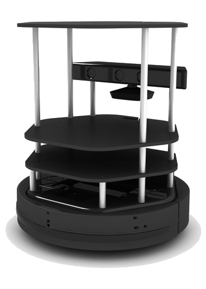

I worked for the Systems Design Engineering department at UWaterloo for my first co-op term, from January to April of 2015. I was employed by Professor Bryan Tripp and supervised by graduate student Ben Selby. Our lab had a team of 6, with the overall project of designing a robot that can effectively navigate through a crowd.
My position was to start the early stages of the project's software aspect. We worked on Clearpath Robotics' Turtlebot in the Robot Operating System (ROS). Initially we were responsible for configuring ROS on the robot and preparing it for development in C++. As it is a new, open source software, we spent a significant amount of time debugging ROS's basic functions.
ROS's navigation stack uses costs assigned to each point in 2D space to determine optimal paths. We optimized this for crowd movement by assigning a greater cost to points in the path of moving objects than in their current place.
